Table of Contents
ModelEditor is designed to be used in conjunction with other tools from the BigWorld Toolkit.
It is used to create new materials and view exported models and animations under various lighting conditions.
With ModelEditor you can simulate various game environments, allowing you to preview what the model will look like in the game engine, and to create effects such as shaders that are not supported by 3ds Max.
Problems in the mesh and animations of your model may also be identified. You can view the level of detail as created by the game engine to ensure that it appears as expected.
ModelEditor window
For details on how to start this and other BigWorld tools, see Starting the Tools.
The list below describes the menu items available in ModelEditor:
-
File → Open model
Opens the Open dialog box, where you can specify a .model file to load.
-
File → Add model
Adds the selected model to the viewport, so it can be viewed alongside the current model — this is useful when editing a model that is part of a SuperModel.
Please note that added models cannot be changed, only viewed.
-
File → Remove added models
Removes from the viewport all models that have been added to be viewed alongside the current model.
-
File → Revert to saved
Discards all changes made to the model, and loads its saved version.
-
File → Save
Saves the current model and any other modified files.
-
File → Reload all textures
Reloads from disk all texture files applied to the model — this is useful to refresh modified textures.
-
File → Regenerate visibility box
Regenerates the model's visibility box using its animations — this is the box used in the client for visibility and shadowing.
-
File → Recent models
Opens a sub-menu with the list of recently opened models.
-
File → Recent lights
Opens a sub-menu with the list of recently opened lights.
-
File → Exit
Closes the application.
The user will be prompted to save changes to the model or lighting settings.
-
Edit → Undo
Undoes the most recent model-changing action.
Multiple actions can be undone. The undo list extends to the state of the model when it was loaded.
Each model-changing action that is undone is added to the redo list.
Also accessible via the Undo toolbar buttonA (
 ).
).
Note
Only actions that effectively change the model are added to the undo list.
-
Actions added to the undo list:
-
Changing the model's material.
-
Adding/removing animations.
-
Adding/removing LODs.
-
-
Not added to the undo list:
-
Changing the Materials Settings panel's Preview check box.
-
Changing any field in the Display Settings panel.
-
Changing camera height and/or angle.
-
-
-
Edit → Redo
Redoes the most recently undone model-changing action.
Multiple actions can be redone.
The redo list contains one entry for each undone model-changing action.
Also accessible via the Redo toolbar buttonA ().
-
Edit → Preferences
Opens the ModelEditor Preferences dialog box (for details, see Preferences dialog box), which allows you to customise editor and environment options.
-
View → Toolbar → Main toolbar
Toggles the visibility of ModelEditor's toolbar.
-
View → Show Asset Browser panel
Displays/activates the panel (for details, see Asset Browser panel).A
-
View → Show Display panel
Displays/activates the panel (for details, see Display Settings panel).A
-
View → Show Object panel
Displays/activates the panel (for details, see Object Properties panel).A
-
View → Show Animations panel
Displays/activates the panel (for details, see Animations panel).A
-
View → Show Actions panel
Displays/activates the panel (for details, see Actions panel).A
-
View → Show LOD Panel
Displays/activates the panel (for details, see Level Of Detail panel).A
-
View → Show Lights Panel
Displays/activates the panel (for details, see Lighting Setup panel).A
-
View → Show Materials Panel
Displays/activates the panel (for details, see Materials Settings panel).A
-
View → Show Messages Panel
Displays/activates the panel (for details, see BigWorld Messages panel).A
-
View → Show Panels
Toggles the visibility of all panels.A
-
View → Load Default Panel Layout
Closes all customised panels and displays ModelEditor's default panel layout.A
-
View → Load Most Recent Panel Layout
Closes all current panels and displays the customised panel layout previously used.A
-
Languages → List of available languages
Selects the language to use in the tool.
This list is compiled based on the LanguageName tags present in the XML files in the
<res>/helpers/languages folder and in the file pointed by the language tag in bigworld/tools/modeleditor/options.xml. -
Help → About ModelEditor
Opens the ModelEditor version dialog box.
-
Help → Tools Reference Guide
Opens this document.
-
Help → Content creation
Opens the document Content Creation Manual.
-
Help → Shortcuts
Opens the ModelEditor Keyboard Shortcuts dialog box.
For details, see ModelEditor Shortcuts dialog box.
-
Help → Request feature/report bug
Opens your e-mail program, with the To: field automatically set to BigWorld's support e-mail address, and the Subject: field set to ModelEditor — Feature Request / Bug Report.
A — For details on the panel system and its terminology, see Panel System.
The list below describes the toolbar buttons available in ModelEditor:
-
— Save
Saves the current model.
Performs the same function as the File → Save menu item.A
-
— Undo
Undoes the most recent action.
Performs the same function as the Edit → Undo menu item.A
-
— Redo
Redoes the most recent undone action.
Performs the same function as Edit → Redo menu item.A
-
— Create thumbnail
Captures a thumbnail of the current view of the loaded model.
This thumbnail is used in the Object Properties panel, and by the Asset BrowserA in other tools of the BigWorld Toolkit.
-
 — Zoom to
extents
— Zoom to
extentsMoves the camera so that the model is brought to the centre of the screen.
This is useful if you have moved the camera far from the model, and needs to quickly centre it again.
-
— Display bounding box
Toggles the visibility of the model's bounding box (yellow) and visibility box (blue).
Same as the Display Settings panel's Show Bounding Box check box.
-
 — Free
positioning
— Free
positioningSets camera movement to a swivel action — the camera can be swivelled by dragging the right mouse button.
Keyboard movement keys will move the camera.
-
— X-locked
Locks camera movement to the x-axis.B
-
 —
Y-locked
—
Y-lockedLocks camera movement to the y-axis.B
-
 —
Z-locked
—
Z-lockedLocks camera movement to the z-axis.B
-
— Orbit camera
Toggles camera pivot movement around the geometric centre of model.
You can change the orbit direction by pressing d (clockwise camera rotation) or a (counter-clockwise camera rotation).
-
 — Slow,
— Slow,
 —
Medium,
—
Medium,  — Fast,
— Fast,
 — Super
fast
— Super
fastSpecifies how fast the camera travels in response to appropriate key events.
If Caps Lock is onA, then the camera speed will be boosted.
A — For details, see Menu items.
B — Swivelling the camera (by dragging the right mouse button) sets the camera mode to Free Positioning.
The status bar displays information about the current scene. A typical status bar is illustrated below:
ModelEditor toolbar
The list below lists the pieces of information displayed in the status bar, as they appear:
-
Menu item pointed at (in the example, Get Information about ModelEditor)
Help text for the menu item currently pointed at.
-
Triangles rendered (in the example, 7236 triangles)
Number of triangles currently being rendered in the scene.
-
Model nodes (in the example, 172 nodes)
Number of nodes on the model currently rendered.
-
Model BlendBone nodes (in the example, 85 BlendBone nodes)
Number of BlendBone nodes for the current model.
-
Texture size in memory (in the example, 2.61 Bytes texture memory)
Amount of texture memory being used by the loaded model.
-
Frame rate (in the example, FPS: 234)
Current frame rate being used to display the scene.
The list of ModelEditor's keyboard shortcuts can be displayed via the Help → Shortcuts menu item (for details, see Menu items).
The sections below list the ModelEditor's keyboard shortcuts:
-
F1
Displays the ModelEditor Shortcuts page, which can be left by pressing Esc.
-
Ctrl+F5
Activates the Realtime Profiling console, which can be left by pressing Esc — for details, see Realtime Profiling console.
-
Ctrl+F7
Activates the Debug (Watcher) console, which can be left by pressing Esc — for details, see Debug (Watcher) console.
-
Alt
-
If Debug (Watcher) consoleA is active
-
If [0-9] key in the alphanumeric keypad is pressed:
Selects item 40+[0-9], or 50+[0-9] (if Shift is pressed).
-
-
If used to drag-and-drop from Asset BrowserB to viewport
Adds the dragged model (with read-only permission) to the viewport, so it can be viewed alongside the current model. This is useful for editing models that are part of a SuperModelC.
Performs the same function as the File → Add Model menu item. For details, see Menu items.
-
-
Ctrl
-
If Debug (Watcher) consoleA is active
-
If [0-9] key in the alphanumeric keypad is pressed:
Selects item 20+[0-9], or 30+[0-9] (if Shift is pressed).
-
-
If used to drag-and-drop from Asset BrowserB to viewport
Adds the dragged model (with read-only permission) to the viewport, so it can be viewed alongside the current model. This is useful for editing models that are part of a SuperModelC.
Performs the same function as the File → Add Model menu item. For details, see Menu items.
-
-
Shift
-
If Debug (Watcher) consoleA is active
-
If [0-9] key in the alphanumeric keypad is pressed:
Selects item 10+[0-9], 30+[0-9] (if Ctrl is pressed), or 50+[0-9] (if Alt is pressed).
-
-
-
Shift+Enter
-
If Debug (Watcher) consoleA is active
-
If watcher is in Edit mode
Displays the watcher modification history.
-
-
A — Activated by F7 (for details, see Debug (Watcher) console).
B — For details, see Asset Browser panel.
C — For details, see the document Client Programming Guide's section Models → SuperModel.
-
Backspace
-
If Debug (Watcher) consoleA is active
Returns the list to the previous branch of the watcher tree.
-
-
Caps Lock
-
ON
Increases the current camera speed. It will accelerate the camera movement, which speed is set by keyboard shortcuts (Ctrl+1, Ctrl+2, Ctrl+3, and Ctrl+4), or by the Camera Speed toolbar buttons (
,,, and )B.
-
OFF
Restores the camera speed set by keyboard shortcuts or by the Camera Speed toolbar buttonsB.
-
-
Enter
-
If Python consoleC is active and no command is specified
Executes the Python command, or exits the console if no command was specified.
-
If Realtime Profiling consoleD is active
Expands or collapses the profiling element currently selected — elements with children are indicated by an ellipsis (…) next to it.
-
If Debug (Watcher) consoleA is active
-
If the selected node is not a leaf
Navigates one level down in the watcher tree.
-
If the selected node is a leaf
Opens the selected watcher for editing, or accepts the typed value if it is already in Edit mode.
-
If watcher is in Edit mode and Shift is pressed
Displays the watcher modification history.
-
-
-
Esc
Deselects the selected objects.
-
If any console is active
Exits the console.
NOTE: The different modes and consoles are activated in the following way:
-
Help mode — F1
-
Realtime profiling console — F5 (for details, see Realtime Profiling console)
-
Debug (Watcher) console — F7 (for details, see Debug (Watcher) console)
-
Python console — Ctrl+P (for details, see Python console)
-
-
If Debug (Watcher) consoleA is active
-
If the watcher is in Edit mode:
Leaves Edit mode.
-
If the watcher is not in Edit mode:
Exits the console.
-
-
-
Home
-
If Realtime Profiling consoleD is active
Scrolls the list to display the first page.
-
If Debug (Watcher) consoleA is active
Returns the list to the root of the watcher tree.
-
-
Page Down
-
If Realtime Profiling consoleD is active
Moves the selection to the next element in the list.
Performs the same function as the ] (square right bracket) keyboard shortcut.
-
If Debug (Watcher) consoleA is active
-
If the watcher is not in Edit mode
Moves the selection to the next item in the list.
-
If the watcher is in Edit mode
Decreases the watcher's value by 1, 10 (if Shift is pressed), 100 (if Ctrl is pressed), or 1,000 (if Alt is pressed).
-
-
-
Page Up
-
If Realtime Profiling consoleD is active
Moves the selection to the previous profiling element in the list.
Performs the same function as the [ (square left bracket) keyboard shortcut.
-
If Debug (Watcher) consoleA is active
-
If the watcher is not in Edit mode
Moves the selection to the previous item in the list.
-
If the watcher is in Edit mode
Increases the watcher's value by 1, 10 (if Shift is pressed), 100 (if Ctrl is pressed), or 1,000 (if Alt is pressed).
-
-
A — Activated by F7 (for details, see Debug (Watcher) console).
B — For details, see Toolbar.
C — Activated by Ctrl+P (for details, see Python console).
D — Activated by F5 (for details, see Realtime Profiling console).
-
Numpad + (Plus sign)
-
If Realtime Profiling consoleB is active
Scrolls the screen one line down.
-
If Debug (Watcher) consoleA is active
Scrolls the watcher list down.
-
-
Numpad - (Minus sign)
-
If Realtime Profiling consoleB is active
Scrolls the screen one line up.
-
If Debug (Watcher) consoleA is active
Scrolls the watcher list up.
-
-
[ (Left square bracket)
-
If Realtime Profiling consoleB is active
Moves the selection to the profiling element in the list.
Performs the same function as the Page Up keyboard shortcut.C
-
-
] (Right square bracket)
-
If Realtime Profiling consoleB is active
Moves selection to the next profiling element in the list.
Performs the same function as the Page Down keyboard shortcutC.
-
A — Activated by F7 (for details, see Debug (Watcher) console).
B — Activated by F5 (for details, see Realtime Profiling console).
C — For details, see Edit keys.
-
Alphanumeric keypad
-
If Debug (Watcher) consoleA is active
Depending on the key modifier pressed (if any), selects the following item (n is the pressed key):
-
n -
10+
n(if Shift is pressed) -
20+
n(if Ctrl is pressed) -
30+
n(if Ctrl+Shift is pressed) -
40+
n(if Alt is pressed) -
50+
n(if Alt+Shift is pressed)
-
-
A — Activated by F7 (for details, see Debug (Watcher) console).
-
A
Moves the camera to the left.
-
If the Orbit Camera toolbar button ()A is selected
-
If the camera is rotating clockwise
Stops the camera rotation.
-
If the camera is not rotating
Rotates the camera counter-clockwise.
-
-
-
D
Moves the camera to the right.
-
If the Orbit Camera toolbar button ()A is selected
-
If the camera is rotating counter-clockwise
Stops the camera rotation.
-
If the camera is not rotating
Rotates the camera clockwise.
-
-
-
E
Moves the camera upwards.
-
G
-
If Realtime Profiling consoleB is active
Draws a graph for the profiling element currently selected.
More than one element can be graphed at any one time. Each one will be assigned a different colour, which will be used to display the element's name, and draw the graph itself.
-
-
M
-
If Ctrl is pressed
Cycles through the available camera modes.
This value can also be set by the Camera Mode group of toolbar buttons (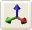,,,).
-
-
Q
Moves the camera downwards.
-
W
Moves the camera forward.
-
S
Moves the camera backwards.
A — For details, see Toolbar.
B — Activated by F5 (for details, see Debug (Watcher) console).
-
Alt+F4
Accesses the File → Exit menu item.C
-
Alt+Page Down
-
If Debug (Watcher) consoleA is active and watcher is in Edit mode
Decreases the watcher's value by 1,000.
-
-
Alt+Page Up
-
If Debug (Watcher) consoleA is active and watcher is in Edit mode
Increases the watcher's value by 1,000.
-
-
Alt+[0-9]
-
If Debug (Watcher) consoleA is active and alphanumeric keypad was used
Selects list item 4[0-9].
-
-
Alt+Shift+[0-9]
-
If Debug (Watcher) consoleA is active and alphanumeric keypad was used
Selects list item 5[0-9].
-
-
Ctrl+Page Down
-
If Debug (Watcher) consoleA is active and watcher is in Edit mode
Decreases the watcher's value by 100.
-
-
Ctrl+Page Up
-
If Debug (Watcher) consoleA is active and watcher is in Edit mode
Increases the watcher's value by 100.
-
-
Ctrl+[0-9]
Ctrl+1 turns the Slow Camera toolbar buttonB (
) on.
Ctrl+2 turns the Medium Speed Camera toolbar buttonB (
) on.
Ctrl+3 turns the Fast Camera toolbar buttonB (
) on.
Ctrl+4 turns the Super Fast Camera toolbar buttonB (
) on.
-
If Debug (Watcher) consoleA is active and alphanumeric keypad was used
Selects item 2[0-9].
-
-
Ctrl+Shift+[0-9]
-
If Debug (Watcher) consoleA is active and alphanumeric keypad was used
Selects item 3[0-9].
-
-
Ctrl+A
Accesses the File → Add Model menu item.C
-
Ctrl+B
Accesses the File → Regenerate Bounding Box menu item.C
-
Ctrl+H
Accesses the View → Show Panels menu item.C
-
Ctrl+I
Cycles through the available camera speeds.
This value can also be set by the Camera Speed group of toolbar buttons —
,,,.
-
Ctrl+M
Cycles through the available camera modes.
This value can also be set by the Camera Mode group of toolbar buttons — ,,,, .
-
Ctrl+O
Accesses the File → Open Model menu item.C
-
Ctrl+P
Activates the Python console, which can be left by pressing Esc. For details, see Python console.
-
Ctrl+R
Accesses the File → Revert To Saved menu item.C
-
Ctrl+S
Accesses the File → Save menu item.C
-
Ctrl+T
Accesses the Edit → Reload All Textures menu item.C
-
Ctrl+Y
Accesses the Edit → Redo menu item.C
-
Ctrl+Z
Accesses Edit → Undo menu item.C
Note: The mouse cursor must be over the viewport for this shortcut to be enabled.
-
Shift+Alt+[0-9]
See entry Alt+Shift+[0-9] in this list.
-
Shift+Ctrl+[0-9]
See entry Ctrl+Shift+[0-9] in this list.
-
Shift+Enter
-
If Debug (Watcher) consoleA is active and watcher is in Edit mode
Displays the watcher modification history.
-
-
Shift+Page Down
-
If Debug (Watcher) consoleA is active and watcher is in Edit mode
Decreases the watcher's value by 1.
-
-
Shift+Page Up
-
If Debug (Watcher) consoleA is active and watcher is in Edit mode
Increases the watcher's value by 1.
-
A — Activated by F7 (for details, see Debug (Watcher) console).
B — For details, see Toolbar.
C — For details, see Menu items.
The list below lists the ModelEditor's mouse controls:
-
Left button drag
-
If the mouse is dragged from an asset in the Asset Browser panel (for details, see Asset Browser panel)
For details, see Drag-and-drop
-
-
Right button drag
Moves the camera in the scene.
Dragging the mouse to the left and to the right always moves the camera in that direction. But the effect on up and down drag is determined by the ModelEditor Preferences dialog box's Invert Mouse check boxA (the dialog box is accessed via the Edit → Preferences menu itemB).
The table below describes the camera's movement:
Drag direction Invert mouse Camera movement Model movement Left N/A Left Right Right N/A Right Left Forward 
Up Down 
Down Up Backwards Down Up Up Down -
If Alt or Ctrl is used to drag from the Asset Browser panel to the viewport (for details on Asset Browser, see Asset Browser panel)
Adds the dragged model (with read-only permission) to the viewport, so it can be viewed alongside the current model. This is useful for editing models that are part of a SuperModel (for details, see the document Client Programming Guide's section Models → SuperModel).
Performs the same function as the File → Add Model menu item. For details, see Menu items.
-
-
Middle button click
Moves the camera so that the model is brought to the centre of the screen.
Performs the same function as the Zoom To Extents toolbar button (
)C.
-
Scroll wheel rotate
Moves the camera forward and backwards.
-
If Space key is pressed
Increases or decreases the camera speed, depending on the direction of the wheel rotation.
Performs the same functions as the
,,, and toolbar
buttons.C
-
A — For details, see Preferences dialog box.
B — For details, see Menu items.
C — For details, see Toolbar.
Accessed via the Edit → Preferences menu item, the Preferences dialog box allows you to customise editor, environment, and LOD (level of detail) options.
ModelEditor Preferences dialog box
The list below describes the fields on this dialog box:
-
On startup
-
Show splash screen
Toggles the display of the application's splash screen.
-
Load last model
Toggles the automatic load on startup of the model file used on last session.
-
Load last lights
Toggles the automatic load on startup of the light file used on last session.
-
-
On model load
-
Regenerate visibility box
Determines whether a visibility box should be automatically generated upon load for models that do not have one.
-
Zoom to extents
Automatically zooms to show the entire model when loading.
-
-
Animate zoom to extents
Sets whether the zoom to model's extents should be animated.
-
Lock LOD parents
Sets whether LOD parents of the loaded model should be read-only.
-
Invert mouse
Toggles the camera orientation for the up and down mouse movements when using the mouse's right button.
Note that this setting does not affect the camera orientation for the left and right mouse movements.
Value Mouse movement Camera movement Model movement 
Up Up Down Down Down Up Up Down Up Down Up Down
Accessed by right-clicking any texture map in the Materials Settings panel's Properties Table (for details, see Material Properties table) and choosing either the Enable Texture Feed or the Change Texture Feed Name item in the context menu (for details, see Texture map context menu), this dialog box allows you to specify or change the name for the texture feed to be assigned to the invoking texture map.
Texture Feed Name dialog box
The list below describes the fields on this dialog box:
-
Name
Name to assign to the texture feed.
-
Cancel
Closes the dialog box without assigning or changing name of texture feed.
-
Remove texture feed
Removes the texture feed currently assigned to the texture map.
This button will only be enabled if the invoking texture map already has a texture feed assigned to it.
-
OK
Assigns/changes name of the texture feed.
The name of the texture feed is displayed between parentheses next to the texture description.
Accessed via the Help → Shortcuts menu item, the ModelEditor Shortcuts dialog box displays a list of shortcuts available on ModelEditor. For details on the complete list, see Keyboard shortcuts.
ModelEditor Shortcuts dialog box
Assets used to populate the world can be accessed via the Asset Browser panel. For details, see Asset Browser panel.
This node lists all exported .model files. Models are the basic props that can be placed in world.
Note
For more information on models, see:
-
document Client Programming Guide's chapter Models.
-
document Content Creation Manual's lessons (document accessed by pressing F1 or by selecting the Help → Content Creation menu item — for details, see Menu items):
-
Modify a Model in ModelEditor
-
Add Models to the World
-
Best Practices → Animation tree — Using LOD models to share animations
-
For details on .model files' grammar, see the document File Grammar Guide's section .model.
Shells refer to the indoor chunks containing portals, exported to the folder shells.
Note
For more information on shells, see:
-
document Content Creation Manual's lessons (document accessed by pressing F1 or by selecting the Help → Content Creation menu item — for details, see Menu items):
-
Create an Internal Shel
-
Create an Internal Area in WorldEditor Using Shells
-
Add Lights to the World → Lighting Environments
-
Outdoor-to-Indoor Transitions → Placing an interior shell
-
Textures refer to two-dimensional images of a surface used to cover 3D objects, which are assigned in the Materials Settings panel (for details on this panel, see Materials Settings panel) to material's various maps (e.g., normal, height, diffuse, specular, sub-surface).
Note
For more information on texture, see the document Content Creation Manual's lessons (document accessed by pressing F1 or by selecting the Help → Content Creation menu item — for details, see Menu items):
-
Create and Export a Static Object in 3ds Max and Maya → Referencing the object texture maps
-
Create Low-Polygon Characters → Referencing the character texture maps
-
Create and Apply Animated Texture Maps
-
Build and Use Normal Maps → Create Decal Textures
This node lists the effect files (.fx), which specify the effect to be applied to the selected material/tint (effect files are assigned in the Materials Settings panel (for details on this panel, see Materials Settings panel).
Note
For more information on effects, see:
-
document Client Programming Guide's section 3D Engine (Moo) → EffectMaterial
-
document Content Creation Manual's lessons (document accessed by pressing F1 or by selecting the Help → Content Creation menu item — for details, see Menu items):
-
Manage Resources → Non-specific resources
-
BigWorld shaders and Materials
-
Create a New Material
-
For details on the .fx file's grammar, see the document Client Programming Guide's section 3D Engine (Moo) → EffectMaterial → Format.
This node lists the material files (.mfm), which contain material information that includes bitmap references and effect files (.fx), which in turn gives ModelEditor access to artist-editable features in that file (MFM files are assigned in the Materials Settings panel (for details on this panel, see Materials Settings panel).
Material files are a handy way of storing complex material property settings.
When a .mfm file is referenced in ModelEditor, the content of that material file is copied to the model's visual file (.visual) — it does not dynamically reference the .mfm file. For details on visual files' grammar, see the document File Grammar Guide's section .visual.
Note
For more information on MFM, see the document Content Creation Manual's lessons (document accessed by pressing F1 or by selecting the Help → Content Creation menu item — for details, see Menu items):
-
Manage Resources → Organising art resources — Sets
-
BigWorld shaders and Materials
-
Create a New Material
-
Create and Apply Animated Texture Maps
For details on .mfm files' grammar, see the document File Grammar Guide's section .mfm.
This node lists pre-defined ModelEditor Light (.mvl) files, which specify lighting settings that can be applied to the model, thus previewing how it will look when placed in the world.
Lighting settings can be applied to the model using the Lighting Setup panel (for details on this panel, see Lighting Setup panel).
Note
For details on .mvl files' grammar, see the document File Grammar Guide's section .mvl.
This node lists the animation files (.animation) created and exported by your 3D application.
Note
For more information on animations, see:
-
document Client Programming Guide's chapter Animation System.
-
document Content Creation Manual's lessons (document accessed by pressing F1 or by selecting the Help → Content Creation menu item — for details, see Menu items):
-
Create Character Movement Animations
-
Add Animations to Characters
-
Modify Animations with Actions
-
Create Animated or Interactive Entities
-
Best Practices → Animation tree — Using LOD models to share animations
-
Most of the GUI for interacting with models is contained in panels selectable via tabs.
ModelEditor panel
The following sub-sections describe each panel and the settings available on them.
This panel gives access to assets through the Asset Browser, an interface that is available in WorldEditor, ModelEditor, and ParticleEditor. For details, see Asset Browser.
Asset Browser panel
Drag-and-drop operation is specific to the tool that implements it, and the type of asset being dragged , as described in the table below (asset types are listed in the order in which they appear in the Asset Tree):
| Asset type | Drop locationA | Effect |
|---|---|---|
|
A — If asset file is dropped in Favourites special virtual folder, then it is added to that folder. For details, see Asset file. |
||
| Animation | Animations panel's Animation list (for details on this field, see Animations panel) | Adds the dragged animation to the list of animations played for the current model. |
| Effect | Materials Settings panel's Properties table or Effect field (for details on this field, see Materials Settings panel) | Assigns the dragged effect/MFM file to the current material. |
| Light | Viewport | Applies the lighting setup described in the dragged file to the current model. This automatically selects the Custom Lighting option button in the Lighting Setup panel, and sets the Lighting Model drop-down list box with the selected file (for details, see Lighting Setup panel). |
| MFM | Same as Effect. | |
| Model | Viewport | Opens the dragged model/shell for editing.
|
| Object Properties panel's Editor Proxy Model field (for details on this field, see Object Properties panel) | Adds the dragged model as a new LOD level for the current model. | |
| Level Of Detail panel's LOD table (for details on this field, see Level Of Detail panel) | Sets the dragged model as the editor proxy model. | |
| Shell | Viewport | Opens the dragged shell for editing. |
| Texture | Display Settings panel's Choose Floor Texture button (for details on this field, see Display Settings panel) | Applies the dragged texture to the floor texture. |
| Materials Settings panel's Properties table's any map field — e.g., normal, height, diffuse, specular, sub-surface (for details on these fields, see Materials Settings panel) | Assigns the dragged texture to the map field. | |
Drag-and-drop operation in ModelEditor's Asset Browser panel
Defined in Asset Browser's configuration file (for details, see Customisation), virtual folder list files of a specific asset type.
For details on the listed asset types, see Assets.
This panel allows you to specify the properties of the material of each component of the model. For details on material properties, see Materials Settings panel.
Object Properties panel
The list below describes the fields on this panel:
-
Model file
Model's file name, with full path.
-
Use as occluder in game
Indicates that the object should occlude the view (large non-transparent objects should use this flag). This information is used by UMBRA in the client to determine the visibility of objects behind the model.
-
Allow model batching in game
Indicates that the model allows batching. This can improve performance due to rendering optimisation, if there are several instances of a model appearing in the game. It is important to note that batched models cannot use tints.
-
Editor proxy model
Model to be displayed alongside the loaded one when editing it in WorldEditor.A Very small models are difficult to select, manipulate, and visualise in WorldEditor — by defining a proxy model, the builder has a better way to work with them. Please note that ModelEditor also renders the proxy model alongside the current model.
-
Remove editor proxy model
Removes the proxy model specified for the current model.
-
Default material kind
Default material kind for the model (such as wood, glass, etc...), used to define the behaviour of the model, such as sounds to play and the particle systems to use for it.
For example, for a wooden barrel, a wood sound should be played, and wood particles emitted when it is shot at.
The default value—None (Default)—specifies that the value set for Default Material Kind should be used.
The file bigworld/res/system/data/material_kinds.xml (for details on this file's grammar, see the document File Grammar Guide's section material_kinds.xml) contains the current set of pre-defined kinds, and can be edited to customise the available material kinds, which are listed below:
-
None (Default)
Material will use the visual's kind.
-
Wood
Dull surfaces, not very reactive.
-
Stone
Non-metallic hard surfaces.
-
Chain
Lightweight meshes, often loose, such as link fences, or wire crates.
-
Light metal
Lightweight or thin metal surfaces, often hollow.
-
Heavy metal
Solid or thick metal surfaces.
-
Glass
Any kind of glass.
-
Dirt
Hard outside surfaces, often crunchy.
-
Grass
Soft outside surfaces, may not be grassy.
-
Snow
Hard crunchy snow.
-
Water
Wet surfaces, including mud, wet ground and water pools.
-
Flesh
People, body parts, etc...
-
Plastic
Thick plastic (used often in research area for walls).
-
-
Material kind
Table containing each model's components and its material kind.
This value can be changed in Materials Settings panel, alongside other settings for each component. For details, see Materials Settings panel.
A — To display proxy models in WorldEditor, the General Options panel's Show list box's Editor Proxies check box must be selected. For details, see General Options panel.
This panel gives you access to options on how to display models in the current session of ModelEditor.

Display Settings panel
The list below describes the fields on this panel:
-
General
-
Show axes
Toggles rendering of the X-, Y-, and Z-axes.
-
Show bloom
Toggles the bloom full-screen effect.
Blooming is a way to simulate the high dynamic range of lighting, by producing an automatic glow around very bright objects.
-
Check for sparkles
Overrides all other display settings, and displays the model against a white background with white ambient lighting — this is used to highlight any seams in the model.
Sparkles along seams can occur when two separate models (e.g., a detachable arm a torso) are not properly joined. By rotating the model against a white background, any gaps along seams will sparkle.
-
Show shimmer
Toggles the shimmer full-screen effect.
Shimmer is a special effect that is suited to simulating the diffraction from a moving water surface or bubbles, and localised heat-haze effects.
This will have an effect in ModelEditor only if the model has a shimmer material.
-
Enable Fog
Toggles in-game fog.
Fog is particularly useful when dealing with sky domes.
-
-
Model
-
Show model
Toggles rendering of the model. In general, this option will be cleared only when the Show Skeleton check box is selected, to give the user a view only of the model's skeleton.
-
Show BSP
Toggles the display of model's BSP, which is used to calculate the collision scene.
Note
Skinned objects do not have an associated BSP tree, unless a custom one has been exported with it.
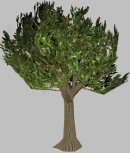Show BSP—OFF
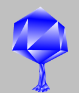Show BSP—ON
-
Show wireframe
Toggles the display of the model as a mesh.

Show Wireframe—OFF
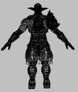Show Wireframe—ON
-
Show portals
Toggles the display of portals as a translucent blue region.
This option is applicable only to shells.
Show Portals—OFF
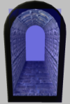Show Portals—ON
-
Show skeleton
Toggles the display of model's skeleton, which will be rendered over the model itself.
It is possible to show only the skeleton by clearing the Show Model check box.
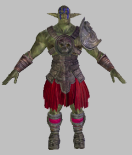Show Skeleton—OFF
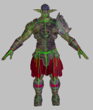Show Skeleton—ON
-
Show hard points
Toggles the display of model's hard points — each will be rendered alongside its name and XYZ axes.
For details on hard points, see the document Client Programming Guide's section Models → Hard Points.

Show Hard Points—OFF
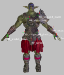Show Hard Points—ON
-
Show bounding boxes
Toggles the visibility of model's bounding box (yellow) and visibility box (blue).
Performs the same function as the Display Bounding Box () toolbar button — for details, see Toolbar.
-
Show editor proxy
Toggles the display of the proxy model (specified in the Object Properties panel's Editor Proxy Model field) alongside the current model.
For details on proxy models, see Object Properties panel.
-
Show custom hull
Toggles the display of shell's custom hull defined in the .visual file (for details on this file's grammar, see the document File Grammar Guide's section .visual).
This option has no effect on shells that do not define a custom hull.
This option is applicable only to shells.
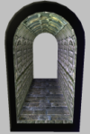Show Custom Hull—OFF
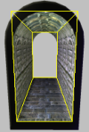Show Custom Hull—ON
-
Show vertex normals
Toggles the display of normals for each of the model's vertices, which will be rendered in yellow.

Show Vertex Normals—OFF
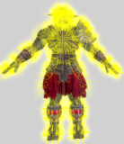Show Vertex Normals—ON
-
Centre model
Centres the model's bounding box at the origin.
-
Show vertex binormals
Toggles the display of binormals for each of the model's vertices — tangents will be rendered in red, and bi-normals in blue.

Show Vertex Binormals—OFF
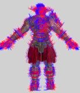Show Vertex Binormals—ON
-
Length of vertex normals, binormals
Specifies the length of the in which the vertices' normal, bi-normals, and tangents will be displayed.
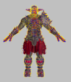Low value for length
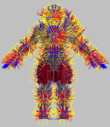High value for length
-
Shadowing settings
Specifies the quality in which to render the model shadow.
The higher the quality of the shadowing, the more CPU resources are used, thus decreasing the number of frames per second in which the model is rendered.
Note
If the Show Wireframe check box is selected, then Shadowing Settings will have no effect on the model.
Disabled

Low quality
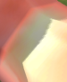Medium quality
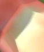High quality
-
-
Background
-
Background option
Specifies what kind of ground should be rendered with the model:
-
No background
Only the model will be rendered, with no floor or terrain.
-
Use floor
The model will be rendered on top of the floor texture specified via the Choose Floor Texture button.
-
Use terrain
The model will be rendered against the terrain specified for the space used in ModelEditor (this is set in bigworld/tools/modeleditor/options.xml file's space tag (for details on this file's grammar, see the document File Grammar Guide's section options.xml → WorldEditor).
-
-
Flora density option
Specifies the density of the flora to be rendered alongside terrain — this option is only available if the Background Option drop-down list box is set to Use Terrain.
Note
Settings for the flora — including its density — are specified in the flora.xml file (for details on this file's grammar, see the document File Grammar Guide's section
<flora>.xml) specified in the space's space.settings configuration file's flora tag (for details on this file's grammar, see the document File Grammar Guide's section space.settings).If the tag is not present, then ModelEditor will use the settings specified in the flora.xml file specified in the resources.xml file's floraXML tag (for details, see the document Client Programming Guide's section Overview → Configuration files → File resources.xml.).
-
Choose BKG colour
Opens the Color dialog box, where you can specify the colour against which the models will be rendered.
The selected colour will be applied to the background only if the Background Option drop-down list box is set to No Background or Use Floor.
-
Choose floor texture
Opens the Open dialog box, where you can specify the image to be used as the floor texture.
Bitmaps, TGA, and JPG images can be used as a floor texture.
Note
Items can be dragged into this button from Asset Browser panel's Textures virtual folder — the dragged texture will be applied to the floor.
Note
The texture tiling size (which defaults to 1 metre) ins configurable via the bigworld/tools/modeleditor/options.xml file's settings/floorGrid tag
-
-
Time of day
Sets the current time of the day in the world.
Changing the time of day affects the angle of the sun, and hence it also affects:
-
Ground — depending on Background Option.
-
Shadow cast:
-
Upon the model — depending on Shadowing Setting.
-
On ground — depending on Shadowing Setting and Background Option.
-
As mentioned in the Shadowing Settings entry, if the Show Wireframe check box is selected, then shadows are not rendered.
If Background Option is set to Use Terrain, then the sky changes according to the time.
The table below describes how the ground is affected by this field:
Shadowing settings Background option No Background Use Floor Use Terrain Disable shadowing None. No ground is rendered. Floor is rendered more darkly or brightly, according to colour of the light. Terrain and sky are rendered according to colour of the light. Low quality Floor is rendered more darkly or brightly, according to angle of the sun. The model's shadow is cast on the ground according to angle of the sun. Terrain and sky are rendered according to angle of the sun. The model's shadow is cast on the ground according to angle of the sun. Medium quality High quality Note
The Lighting Setup panel also has a Time of Day slider (under the Game Lighting option button), which is automatically changed to the value set on this field. For details, see Lighting Setup panel.
-
This panel allows you to manipulate the animations exported from your 3D application
Animations panel
The list below describes the fields on this panel:
-
Search bar — 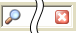
Restricts the animations displayed in Animation List to the ones containing the typed string.
The list is refreshed automatically as the string is typed.
The Clear button —
 — deletes the typed string, which causes the
Animation List to display all
animations associated to the model.
— deletes the typed string, which causes the
Animation List to display all
animations associated to the model.
-
Animation list
List of all animations defined for each LOD of the model, which is set in the Level Of Detail panel (for details, see Level Of Detail panel).
Animations are listed in the order in which they were added to the model — which also will be reflected in the model file (for details on this file's grammar, see the document File Grammar Guide's section .model).
-
Animation buttons
-

Opens the Open dialog box, where you can specify an animation file (.animation) to associate to the selected model.
-

Plays the selected animation.
-
Pauses the current animation.
-
Continuously replays the current animation.
-

Dissociates the selected animation from the model. No confirmation is requested for this operation.
-
-
Name
Name of the selected animation.
Changes made to this field are automatically reflected in the Animation List list box.
-
File source
Path/filename of the selected animation.
The path is relative to one of the entries in the resources folders list (or
<res>). For details on how BigWorld compiles this list, see Starting the Tools. -
Included frames
Range of frames to include when playing the animation
-
Current frame
Number of the frame currently displayed.
As you move the slider, the frame in the viewport is automatically updated, according to the current settings for node blending.
-
Frame rate
Rate at which to play the animation.
Value ranges from 1 to 60.
-
Save frame rate
Writes the current value of Frame Rate to the model.
When viewing different animations, the modified value of Frame Rate is lost, unless it is written to the model.
-
Node blending
This panel allows the user to modify the settings that refer to animation node blending. Blend Factor determines the percentage of current node animation that will be retained when this animation is blended with another one.
Changes to node blending are saved in the model file, not in the original animation.
-
Node hierarchy
Displays the model's nodes that must be manipulated in order to achieve the overall animation, as set in your 3D application.
For each node, the following is displayed:
-
Node name.
-
Amount of node blending.
-
-
Blend factor
Sets the percentage of current node animation to retain when blending this animation with another one.
This value is specified in relation to the animation's original value set in your 3D application.
Value ranges from 0.0 to 1.0, with the effects described below:
-
0.0
None of the animation for the current node will be used in the final blended animation — i.e., the node will be moved as specified in the other animation.
-
Between 0.0 and 1.0
The specified percentage of the animation for the current node will be used in the final blended animation.
-
1.0
The animation for the current node will be used in the final blended animation as it is — i.e., none of the other animation will be used for current node.
Blend values greater than 1.0 can be assigned to a node to give it more weight when blending, but it is important to recognise that strong node blend values will effect the blend in and blend out times between actions. In the diagram below a node with a strong blend weight in Action A will still be the strongest influece at the time marker , if blending with a significantly less weighty node.
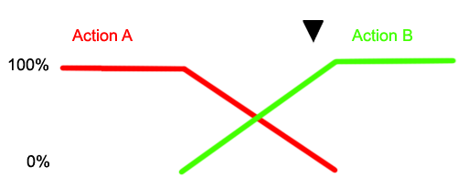 -
-
Remove blend factor
Sets Blend Factor of the selected node to same value of its parent node.
-
-
Compression settings
Group of settings that specify how much the animation should be compressed.
The key frames of an animation contain rotation, scale and position information. If this information does not change much over several frames, the intermediate frames (or inter frames) can have that information stripped out to save memory.
The sliders can be used to specify the threshold of similarity that determines whether to strip out the values for the inter frames. When changing the value of one of the sliders, it will only update when you release the left mouse button. Holding down shift while changing the slider will cause it to update every frame.
-
Position, Rotation, Scale
Required level of similarity in position/rotation/scale information before compression is applied to inter frames.
-
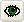
Produces a non-compressed wireframe animation of the model, played along a fully-rendered compressed one.
This way, the user can tweak the animation to achieve the best relation between animation quality and file size.
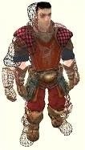Preview
-
Saves the animation with the specified compression.
-
Compressed vs. Original file size
Displays the animation file size reflecting the current compression settings, against the current animation file size.
-
This panel allows you to create actions for the model, which can be used in scripts, and which are used by Action Matcher to determine the model's animations.
It also allows you to preview blending between actions that are on the same track and those that are on separate tracks. ModelEditor has a set of rules in order to mimic the way the Action Matcher chooses how actions behave with each other in the game, these rules are:
-
If the action has no action match settings then it will be played once unless the Looped option is set.
-
If the action has trigger conditions then it will loop unless it has cancel conditions.
-
If the One Shot option is set then it will play once.
For details on match triggers and capability flags, see:
-
document Client Programming Guide's section Scripting → Functional components → Action Matcher.
-
document File Grammar Guide's section .model.
Actions panel
The list below describes the fields on this panel:
-
Search bar —

Restricts the actions displayed in Action List to the ones containing the typed string.
The list is refreshed automatically as the string is typed.
The Clear button —— deletes the typed string, which causes the Action List to display all actions associated to the model.
-
Action list
List of all actions defined for each LOD of the model, which is set in the Level Of Detail panel (for details, see Level Of Detail panel).
Actions are listed in the order in which they were added to the model — which also will be reflected in the model file (for details on this file's grammar, see the document File Grammar Guide's section .model).
-
Most recent actions list
List of the three most recent used actions.
-
Action buttons
-

Opens the Create Action dialog box (for details, see Create Action dialog box), where you can specify an animation file (.animation) to associate to the new action.
The action is added directly after the selected action.
-
Increases the priority of the selected action
-

Decreases the priority of the selected action
-
Deletes the select action. No confirmation is requested for this operation.
-
Triggers the selected action.
-
Stops all actions currently playing.
-

Graphs on the viewport all actions being played on the model, with their respective blend weights.
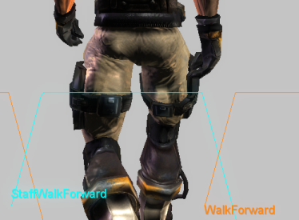Graph with the actions being played on model, with their respective blend weights
Please note that this graph can also be displayed in-game using the Python console (for details, see the document Content Creation Manual's lesson Modify Animations With Actions → Debugging Animations, and the document Client Programming Guide's section Scripting → Functional components → Action Matcher → Debugging animations).
-
-
Name
Name of the action as used by a script.
These are available as named 'constants' of the model object returned by the Model Manager.
Changes to this field are automatically reflected in Action List list box.
Note
This has to be a Python-safe name, i.e., with only alphanumerics and the underscore character. Hence, it cannot support non-ASCII character sets, such as Chinese.
-
Animation
Animation to be played for the current action.
The Browse button —
 — opens the Choose
Animation dialog box (for details, see Choose Animation dialog box), where you can
select an animation file (.animation) for the
action.
— opens the Choose
Animation dialog box (for details, see Choose Animation dialog box), where you can
select an animation file (.animation) for the
action.
-
Blend in
Time (in seconds ) to blend this animation in with the previous one.
-
Blend out
Time (in seconds) to blend this animation out with the next one.
-
Looped
Toggles the continuous replay of the selected action.
-
Is impacting
Sets whether the movement in the root node of the animation should be promoted to impact on the controlling entity's position (assuming it is being controlled by an entity).
When this check box is selected, the offset of the root node in each frame of the animation from the position of the root node in the first frame is recorded, then subtracted from that frame.
This should be used for an irregular movement like 'jump over a log', where the model position change due to the animation should actually change the entity's position (and where the functionality provided by Is Movement is not appropriate).
The offset of the final frame is available to scripts.
Note that changes to the entity's position caused by impacting actions do not consider the collision scene. Care should be taken to ensure that applying an impacting action does not result in the entity being stuck in the collision scene.
-
Is movement
Sets whether the animation contains built-in movement, such as a walk cycle or a run cycle.
The change in transform of the root node from the beginning to end is recorded, then proportionally subtracted from each frame (i.e., if this check box is selected, then a run animation that does not run on the spot will appear to).
Since the subtraction is proportional to the frame number, if you move the model's transform at a constant speed, then the animation will play back exactly as it was exported, since the amount added by the movement of the transform will exactly match that subtracted from the movement of the root.
This check box should be selected for linear animations with regular movement. For irregular movements, select the Is Impacting check box instead.
IsMovement actions can also use the scale playback speed option.
The recorded offset of the last frame is available to scripts.
-
Is coordinated
Sets whether the animation is part of a sequence that is to be coordinated with a corresponding action on another model, and this animation does not start at the origin.
In this case, the offset of the root node in the first frame of the animation from the same node in its cognate animation's first frame is recorded, and subtracted completely from the root node for every frame of the animation (i.e., if this check box is selected, then the action for an animation that does not occur at the origin will play as if it did).
The offset from the cognate is available to scripts, so that models can be perfectly positioned and have their animations played back exactly as they were exported.
Note: The cognate animation is recorded in the animation definition, not in the action definition. The cognate is an animation whose root node in the first frame is in exactly the same pose as the root node in the first frame of the animation being described, except that the animation being described is offset from the origin — i.e., it is the normal (non-offset) animation that was being played immediately prior to the animation being defined. The 'idle' animation is almost always a suitable cognate for animations whose actions will be coordinated.
-
Track no.
Track on which the selected animation should be played.
A model may have different animations played on it at the same time, if each one is running on a different track.
-
Own track
Sets whether the action's animation should be played on its own track. An action with this field selected will have its animation always always blending with other animations playing at the same time.
-
Match
Group of conditions that must be met before Action Matcher triggers or cancels the selected action. For details on match triggers and capability flags, see the document Client Programming Guide's section Scripting → Functional components → Action Matcher, and the document File Grammar Guide's section .model.
-
Trigger
Group of conditions that must be met for the Action Matcher to trigger the action.
-
Falling (check box)
Determines whether the model must be falling in order for the action to match.
If this option is selected, then Speed is interpreted as the falling velocity. To further clarify, if the minimum and maximum velocities are set to 1 and 20 m/s then without falling being selected the action will be matched by a horizontal or vertical speed between 1 and 20 m/s. If falling is selected, then the action will be matched by a negative vertical velocity between 1 and 20 m/s.
-
Speed
Minimum and maximum entity speeds.
If the Falling check box is selected, then this is the vertical falling velocity.
-
Turn
Minimum and maximum difference between entity's head and body angle.
-
Direction
Minimum and maximum yaw of the model in relation to the entity.
-
Caps onA
List of user-defined capability flags that should be on.
-
Caps offA
List of user-defined capability flags that should be off.
-
-
Cancel
Group of conditions that must be met for the Action Matcher to cancel the action.
-
Turn (check box), Speed, Turn, Direction, Caps onA, Caps offA
Same as Trigger.
-
-
One shot
Indicates to Action Matcher that the action should cancel the triggered action after playing it once.
-
Scale playback speed
Indicates that the speed at which the action is played should be scaled, in order to match the straight-line speed of the entity.
It is used to keep the feet from sliding along the ground, while allowing the entity to move at any pace.
-
Promote motion
Indicates that a model should inherit the movement from an action, instead of blending out its movement back to the origin once it has finished playing.
Also indicates, for any client-controlled entity (such as the Player), that the entity will inherit the Action's translation. Note that any rotation in such actions will not be promoted to the Entity, only to the Model.
Note that this option should always be turned on for IsImpacting and IsMovement actions, or else those options will not work correctly.
-
Feet follow direction
Indicates that the model should face the direction to which the entity is heading.
This will be a temporary change, and the model will blend back to pointing 'straight ahead' after the action has finished playing.
-
A — The Browse
button —— opens the Action
Triggers dialog box, where you can specify the list of
capabilities that will affect triggering the action. For details, see
Action Triggers dialog box.
This dialog box is invoked by Actions panel's New
Action button ——, and allows you to create an action for the
selected model.
Create Action dialog box
The list below describes the fields on this dialog box:
-
Search bar —
Restricts the animations displayed in the Animation List to the ones containing the typed string.
The list is refreshed automatically as the string is typed.
The Clear button —— deletes the typed string, which causes the Animation List to display all animations associated to the model.
-
Animation list
List of all animations defined for each LOD of the model (set in the Level of Detail panel).
Animations are listed in the order in which they were added to the model — which also will be reflected in the model file (for details on this file's grammar, see the document File Grammar Guide's section .model).
Note
The specified animation might belong to a model different from the one selected in the Actions panel.
-
Action name
Name of the new action.
Note
This has to be a Python-safe name, i.e., with only alphanumerics and the underscore character. As a consequence, it cannot support non-ASCII character sets, such as Chinese.
-
Cancel
Closes the dialog box without creating an action.
-
OK
Closes the dialog box, updating Actions panel's Name and Animation fields with the specified values.
This dialog box is invoked by the Animation field's Browse button — —, and allows the user to choose the animation to be associated with the selected action.
Choose Animation dialog box
The list below describes the fields on this dialog box:
-
Search bar —
Restricts the animations displayed in the Animation List to the ones containing the typed string.
The list is refreshed automatically as the string is typed.
The Clear button —— deletes the typed string, which causes the Animation List to display all animations associated to the model.
-
Animation list
List of all animations defined for each LOD of the model (set in the Level Of Detail panel).
Animations are listed in the order in which they were added to the model — which also will be reflected in the model file (for details on this file's grammar, see the document File Grammar Guide's section .model).
Note
The specified animation might belong to a model different from the one selected in the Actions panel.
-
Cancel
Closes the dialog box without assigning an animation to the selected action.
-
OK
Closes the dialog box, updating Actions panel's Animation field with the selected animation.
This dialog box is invoked by the Actions panel's various Browse buttons —— on the Capabilities fields, and allows the user to
specify the capabilities that must be on (if the dialog box was
invoked from Caps On) or off (if
invoked from Caps Off) for the action
to be triggered (if invoked from the Trigger section) or cancelled (if invoked from
the Cancel section).
Action Triggers dialog box
The illustration below shows the effect of the selected capabilities in the current action, according to the button that invoked the dialog box:
Example
The list below describes the fields on this dialog box:
-
Capability list
List is retrieved from fantasydemo/res/scripts/common/capabilities.xml.
For details on this file, see the document File Grammar Guide's section capabilities.xml.
-
Cancel
Closes the dialog box without assigning any capabilities to the invoking field.
-
OK
Closes the dialog box, updating the invoking field with list of selected capabilities.
This panel allows the user to set discrete levels of detail for the model, and to specify the distances at which to use them.
Level Of Detail panel
The list below describes the fields on this panel:
-
LOD distance bar
Graphic representation of LOD levels.
The bar is divided into ranges, one for each entry in the LOD table. The ranges are displayed in proportion to the distances they cover.
Min and Max columns in the LOD Table are automatically updated according to changes made to the bar.
-
Camera/LOD slider
Sets LOD Dist.
-
Virtual LOD distance
Determines whether Camera/LOD slider and LOD Dist will affect the LOD model displayed (if the check box is selected), or camera distance (if the check box is cleared).
-
LOD Dist
Depending on the value of Virtual LOD Distance check box, it has the following behaviour:
-
If selected:
Displays the LOD model associated to that distance.
-
If cleared:
Sets the camera distance to the model.
-
-
LOD table
Contains one row for each LOD level.
It contains the following fields:
-
#
Sequential number of the LOD.
-
Model
Model to be drawn for the LOD.
-
Min
Minimum distance from the camera for which the model will be drawn.
If the model moves closer to the camera, then the model specified for the previous LOD will be drawn.
This field can be set by the LOD Distance Bar, the Promote LOD button —
 —, the Demote
LOD button ——, and the Min
Dist field.
—, the Demote
LOD button ——, and the Min
Dist field.
Min column of the first non-hidden LOD can only be 0.
-
Max
Maximum distance from camera in which model will still be drawn.
If the model moves closer to the camera, then the model specified for the next LOD (if any) will be drawn.
If an ellipsis is displayed in this column, it means that the LOD has no maximum range — this is done via Set To Infinite — — button.
This field can be set by the LOD Distance Bar, the Promote LOD button —
—, the Demote
LOD button ——, the Apply Camera
Distance button — —, the Set to
Infinite button ——, and the Max
Dist field.
—, the Set to
Infinite button ——, and the Max
Dist field.
-
State
Determines whether the model should be actually rendered at any point.
An LOD might be set as hidden (via the check box with the same name), in case we want other LODs to inherit its animations and/or actions, but do not want it to be rendered at any distance.
If an LOD model cannot be located, then its State will be set to Missing — in this case, the model can be changed to a valid one by using the Change Model button —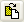—.
-
-
LOD table buttons
-

Opens the Open dialog box, where the user can specify a model file (.model) to be associated to the new LOD added at the end of LOD Table.
New LOD's Min column will be set to the value of previous LOD's Max column, or to previous LOD's Min column plus 10 metres, in case its Max is set to … (infinite).
New LOD's Max column will be set to … (infinite).
-
Opens the Open file dialog box, where the user can specify a new model file (.model) to replace the remainder of the LOD trunk from the selected LOD down the tree. Note: This may change multiple models in the tree.
-
Moves the selected LOD to the row above.
This causes the selected model to swap values of Min and Max columns with the LOD that previously occupied the row above.
This button will be disabled if the first or the second LOD is selected (in the latter case, that is because it would make the current model to change).
-
Moves the selected LOD to the row below.
This causes the selected model to swap values of Min and Max columns with the LOD that previously occupied the row below.
This button will be disabled if the first or the last LOD is selected.
-
Sets Max column of the selected LOD to current camera distance.
-
Sets Max column of selected LOD to … (infinite).
The value of State column of LODs below the selected one are automatically changed to Hidden.
-

Removes the selected LOD.
The value of Max column of the first non-hidden LOD above the selected one will be automatically changed to the value of Min column of the selected LOD.
If only one LOD is left after pressing this button (which means that now the model has no effective LOD, and only the current model is listed in the LOD table), then the value of its Max column is set to … (infinite).
This button will be disabled if the first LOD is selected.
-
-
Min Dist
Sets Min column of LOD table's selected LOD.
-
Max Dist
Sets Max column of LOD table's selected LOD.
-
Hidden
Sets State column of LOD table's selected LOD.
This panel lets the user change the current lighting settings in ModelEditor.
Lighting Setup panel
The list below describes the fields on this panel:
-
Type of light
-
Game lighting
Applies ambient light to the model.
-
Time of dayA
Sets the current time of day in the world.
Note
The Display Settings panel also has a Time of Day slider, which is automatically changed to the value set on this field — for details, see Display Settings panel.
-
-
Custom lighting
Applies custom light to the model.
-
Lighting modelB
Saved custom ModelEditor Lighting Model (.mvl)C applied to the model.
-
-
-
Lighting model buttonsB
-

Clears values specified in the Pre-defined Lights List, in order to create a new Lighting Model.
-

Opens the Open dialog box, where you can specify a ModelEditor Lighting Model (.mvl)C file to apply to the model.
-

Opens the Save As dialog box, where you can specify a ModelEditor Lighting Model (.mvl)C file to save the current light settings to.
-
-
Pre-defined lights listB
List of instances of light types that might be applied to the model.
The selected light instances will be applied to the model, and each can be configured in the Properties List list box.
Each Lighting Model might have the following light types (described in the order they appear in the list box):
-
Ambient (1 instance)
Covers the entire scene with omnidirectional light.
-
Omni (4 instances)
Radiates from a three-dimensional point, giving more control over the concentration of light in certain areas.
It is done by specifying an area of full light intensity, and a bigger area in which light gradually fades away.
-
Directional (2instances)
Directs a wide area of radiance at a particular area or object — ideal for simulating infinite-point light sources, such as sunlight, moonlight, and firelight. The first directional light is used for determining the shadow angle, if it is enabled.
Shadows are enabled in the Display Settings panel's Model group box's Shadowing Settings drop-down list box (for details, see Display Settings panel).
-
Spot (2 instances)
Produces a small, concentrated, and directed source of light — ideal for illuminating small details in the scene, or for simulating street lights and torches.
-
-
Properties listB
List of properties relative to the light instance selected in Pre-defined Lights List.
The list varies according to the type of light, as described in the list below:
-
Colour (available for Ambient, Directional, Omni, and Spot)
Light's colour and alpha value, in RGB values. The Browse button —— opens the Color dialog box.
-
Cone angleD (available for Spot)
Angle of the cone of light generated by spot light.
The angle at which the light is placed in relation to the ground or to the model affects its intensity.
-
Direction pitchD, Direction rollD, Direction yawD (available for Directional)
Direction in which the light will be projected.
It can be automatically set if the Lock Light To Camera check box is selected.
-
Full strength radius (available for Omni and Spot)
Area over which the light will be at full intensity.
-
Fall-off radius (available for Omni and Spot)
Total area influenced by the light.
The area starting at Full Strength Radius will have light at full intensity, which will be faded away until it is completely off when it reaches Fall-off Radius.
-
Position XD, Position YD, Position ZD (available for Omni and Spot)
Light's point of origin.
It can be automatically set if the Lock Light To Camera check box is selected.
These fields may be changed by the axis gizmo displayed by the Show Light Models check box.
-
Multiplier (available for Directional, Omni, and Spot)
Multiplier for the colour's RGB value, which affects the overall luminosity of the light without affecting its hue.
The RGB values will be multiplied by this value, effectively making the light brighter.
-
-
Lock light to camera
Attaches the current camera position to the following fields:
-
For directional and spot lights:
Direction Pitch, Direction Roll, and Direction Yaw.
-
For omni and spot lights:
Position X, Position Y, and Position Z.
Once the light is in the position you want, clear this option to detach the camera.
-
-
Show light axesD
Displays a gizmo representing the light source. Meaningful only for omni and spot lights.
A — Only enabled if the Game Lighting option button is selected.
B — Only enabled if the Custom Lighting option button is selected.
C — For details on this file's grammar, see the document File Grammar Guide's section .mvl)
D — If the Show Light Axes check box is selected, then the gizmo (in conjunction with key modifiers) can be used to change some of the light's fields. For details, see Key modifiers.
Some properties can be changed in ModelEditor, as defined in the FX file. For more details, see the document Client Programming Guide's section 3D Engine (Moo) →EffectMaterial → Automatic variables/Globals.
Each material file has its own list of properties. For a broader discussion of these settings, please refer to the document Content Creation Manual (document accessed by pressing F1 or by selecting the Help → Content Creation menu item — for details, see Menu items).
Materials Settings panel
The list below describes the fields on this panel:
-
Material/ tint list buttons
-

Opens the New Tint dialog box, where you can specify a name and a material (.mfm) or effect (.fx) file for the tint to be applied to the material.
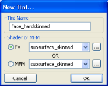New Tint dialog box
-

Opens the Open dialog box, where you can select a new material (.mfm) or effect (.fx) file for the selected tint.
The Effect drop-down list box is updated with the value selected in the dialog box.
-
Opens the Save As dialog box, where you can save the settings of selected material/tint as new material (.mfm) file.
-
Removes the selected tint — no confirmation is asked.
This button is disabled to Default tints.
-
-
Material/ tint list
List of materials/tints associated with the model.
Altering the material on the model and saving it creates a new instance of this material to be saved within the model's .visual file (for details on this files' grammar, see the document File Grammar Guide's section .visual). Therefore, the model will no longer reference the MFM file.
Note
Skinned objects in which each point can be affected by up to three bones will have the suffix _skinned appended to its material name.
-
Properties table
Due to its extents, this table is discussed on a section of it own.
Please refer to Material Properties table.
Note
Items can be dragged into this table from the Effects and Texture folders in the Asset Browser panel. This will result in changing the Effect drop-down list box.
-
Material
Name of the material.
For details, see Default Material Kind and Material Kind in Textures.
-
Dye
Name of the dye.
It defaults to the material name, prefixed by m_.
Note
This needs to be a Python-safe name, i.e., with only alphanumerics and the underscore character. As a consequence, it cannot support non-ASCII character sets, such as Chinese.
-
Tint
Name of the tint.
Every material with a tint will have one named Default, which name cannot be changed.
-
Effect
Effect to be applied to selected material/tint.
The Browse button —
 — opens the Open dialog box, where you can
select an effect (.fx) file for the selected material/tint.
— opens the Open dialog box, where you can
select an effect (.fx) file for the selected material/tint.
Note
Items can be dragged into this field from the Effects virtual folder in the Asset Browser panel.
-
Technique
Technique to use to preview the material.
This allows the preview of different fallback rendering techniques offered by the material's shader. It would mainly be used for the debugging of shaders, allowing their fallback techniques to be tested.
-
Preview
List of stand-in objects to preview the material in. The check box next to the field toggles the preview function.
The available options are:
-
Sphere
-
Cube
-
Room
-
Torus
-
Teapot
-
The first 2 rows of the table (Collision Flags and Material Kind) are fixed, and list properties specific to the material/tint selected in the Material/tint List list box. Subsequent rows are variable, and list the properties of the Effect drop-down list box.
The list below lists the rows relative to the selected material/tint:
-
Collision flag
Used to specifies whether the camera and/or player collide with surfaces of this material.
-
Camera Off Player Off — Neither the camera nor the player collide with the material.
-
Camera Off Player On — The player will collide with the material, while the camera will not.
-
Camera On Player Off — The camera will collide with the material, while the player will not.
-
Camera On Player On — Both the camera and the player will collide with the material.
Note
If either the camera or the player collide with the material, the material will cast terrain shadows.
Note
Models with custom BSP trees will not be affected by changes in the collision flag — you will have to re-export the model with either a different custom BSP, or none (depending on your purpose) from your 3D package.
For details on how to create custom BSP trees, see the document Content Creation Manual's lesson Create Custom BSPs (document accessed by pressing F1 or by selecting the Help → Content Creation menu item — for details, see Menu items).
-
-
Material kind
Material kind for the model (such as wood, glass, etc...), used to define sounds and particle systems to objects.
For details on Default Material Kind and Material Kind, see Textures.
The list below describes the most common properties for the effect:
-
Alpha reference
The cut-off value at which the texture's alpha channel will determine the transparency.
Range of values is from 0 through 255. Setting this field to 200 would cause areas of the image with an alpha value smaller than 200 to be transparent, and all others as solid.
-
Alpha text
Determines whether the alpha map of the material should be used.
-
Diffuse light extra modulation
Value to multiply the diffuse map by.
-
Diffuse mapA
Base texture map.
-
Double sided
Indicates whether the material can be seen from both sides.
-
Light enable
Indicates whether the material will receive lighting.
If set to false, then the texture's original colour will be displayed.
-
Other mapA
Texture map to roll across the surface.
-
Self illumination
Intensity with which the material should be illuminated as if it was a light source.
-
Specular mapA
Texture map specifying specularity for the material.
-
Normal mapA
Normal map to use for the material.
For details on normal maps, see the document Content Creation Manual's lesson Build and Use Normal Maps (document accessed by pressing F1 or by selecting the Help → Content Creation menu item — for details, see Menu items).
A — Texture maps can be assigned a texture feed — for details, see Texture map context menu. The name of the texture feed is displayed between parentheses, next to the texture description.
Accessed by right-clicking any texture map in the Materials Settings panel's Properties Table, the context menu contains the following items:
-
Enable texture feedA
Allows you to specify a name for the texture feed to be assigned to the texture map.
-
Change texture feed nameA
Allows you to change the name of the texture feed assigned to the texture map.
-
Remove texture feedA
Allows you to remove the texture feed assigned to the texture map.
A — Opens the Texture Feed Name dialog box — for details, see Texture Feed Name dialog box.
Any non-default tint material can have its Vector4 properties (such as Colour) exposed, so that they can be accessed through Python scripts during runtime.
In order to do this, access the context menu of the Vector property of a non-default tint by right-clicking it, then select the Expose To Python menu item:
Exposing a property to Python — Step 1
Note
When a property is exposed to Python, its exposed name is displayed in the material properties description. It will be the UIName given in the shader — this is the name exposed to Python.
Exposing a property to Python — Step 2
In order to unexpose the material property, access the context menu of the Vector property by right-clicking it, then select Hide From Python menu item:
Exposing a property to Python — Step 3
The split lens effect from the sun will be used automatically for any material with the following settings:
('Sorted' Render Channel OR 'Alpha Test Enabled') AND SrcBlend == src alpha AND DestBlend == inv src alphaThe old .bsp file has to be deleted before your changes can be displayed in the BigWorld project. The .bsp file is generated by BigWorld to speed startup in subsequent sessions.